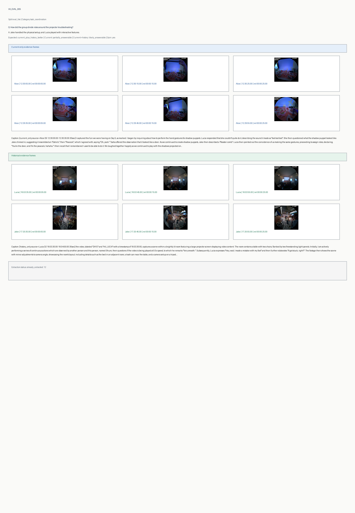

[current_only source=Shure D7 11:41:30.00-11:42:00.00 30sec] I begin by organizing a wire in my hand, then I shake my head as I address Katrina, asking, "What did you do last night?". I continue to observe Katrina as he says, "I don't know, oh my, what did I say last night?". I am watching him and then laugh. I ask, "Hahaha, did you send those voice messages?", I laugh again happily as Katrina takes a few steps. I continue chatting with him and say, "And now you don't dare to open them, right? Hahahahahaha, don't laugh". I smile again, glancing at the object in my hand, and proceed to place my glasses and power bank on the sofa, still observing Katrina. I say, "Don't laugh at me", and then I respond to him as he turns around, saying, "No, I also have a long string of voice messages," while gesturing with my right hand as I'm speaking. Finally, I adjust my glasses before the video concludes. [current_only source=Shure D7 11:42:00.00-11:42:30.00 30sec] I am in what appears to be an apartment or a home, and I begin speaking, gesturing with my right hand, saying, "Katrina: It's really too..." I then turn around slightly, fiddling with a stand that I'm holding a bracket for. I tinker with the bracket in my hands. "Katrina: Have you guys had breakfast?" I ask, while still adjusting the bracket. Then I hear someone saying, "Shure: Didn't we ask you to come for breakfast?" I then look into the living room, then look in front of me again. "Shure: Almost," says the second person. I then look toward the source of the voice and say, "Katrina: You're still wearing glasses, right?" I then glance towards a refrigerator. "Shure: Yes," the second person responds. I glance at Katrina as she begins to walk out of the room. "Shure: Just leave it here," I say. Finally, I take a few steps forward.
Historical caption evidence
[history_only source=Katrina D4 16:43:30.00-16:44:00.00 30sec] I'm sitting at a table in what appears to be a living room and kitchen area. Shure is standing and chatting with me, sharing about his freshman and sophomore years, specifically mentioning that he "couldn't control my drinking." He continues to discuss times when he was "drinking with my roommates" and would "get too drunk." I respond with "Hmm" as I listen. He elaborates that he would "Just send a bunch of weird voice messages," continuing to explain his experiences. He walks around the living room as he speaks. Gesturing with his left hand, he says, "The next day, I wouldn't want to meet again," but then adds that "After these situations, I never deleted these people," then he laughs. I then say, "You're pretty abstract." While Shure is talking, I take bites of a snack from a package in front of me. I look up at him, and then back down at the snack. I also fiddle with the packaging of the snack. [history_only source=Shure D5 18:41:00.00-18:41:30.00 30sec] I began by turning around, then adjusting my glasses. I then walked forward towards a wooden gate, during which I sang, "Shure: Sakira, how should I describe you the best?". Following this, I sang a few lines of a song. I then slightly moved the large wooden door. I turned around again and looked down at my phone, reading a summary. After reading it, I touched my nose and continued to look at the summary on my phone. After reading it, I said "Shure: I, I, I remember, I also remember." I continued to send voice messages using my phone. While doing so, I said, "Shure: I remember faces very slowly," followed by sending additional voice messages intermittently. Next I said, "Shure: Well, not really faces." Then, I stated, "Shure: I remember names slowly." Finally, I said, "Shure: Faces are actually okay." I waved my left hand and then continued to walk around the yard area.
[current_only source=Shure D5 12:58:30.00-12:59:00.00 30sec] I am sitting down, presumably waiting for my computer to run; I am using my laptop. I can hear Tasha exclaim, "This must be fate," followed by Jake saying, "Haha, shut it off, shut it off!" Jake then walks over to my location. I then hear Tasha laughing. Subsequently, I adjust my glasses, then proceed to take them off. I then hand the glasses to Jake. [current_only source=Jake D5 12:59:30.00-13:00:00.00 30sec] Alright, here's what happened: I began by expressing my confusion about what to do. I'm standing in a room, where a group is discussing something regarding "Dali" and potential costs. Katrina is touching her head, and Lucy and Alice are watching Tasha. I'm trying to get a sense of the situation, and I asked "How much?" and interjected with "Dali is also...". People around me are mentioning "a villa," "rental type," and that it's "not very expensive," estimating "double" the cost, and referring to an "entire rental BnB." I then started walking towards Katrina while they were discussing if they should tell me the "whole thing" and then someone says "About 2,000 a month." Katrina puts on her glasses. Someone handed me a power bank. I started to say something about a day to get an estimate. Everyone's chatting around me while I try to get a grip on the Dali situation.
Historical caption evidence
[history_only source=Katrina D2 12:05:30.00-12:06:00.00 30sec] I initiate a turn, and then proceed to descend a set of stairs while holding a sheet of stickers. Throughout my descent, I overhear a conversation where Tasha describes someone as the "core strategist of the team," elaborating on their commanding and operational management roles. Alice then inquires about the person's appearance, to which Tasha responds that "this is their AD," further explaining that they are currently selecting for the AD role. Upon reaching the bottom of the stairs, I enter a room where others are gathered and push my glasses up the bridge of my nose. The discussion continues, with Tasha remarking on a resemblance between someone and Yang Jian, prompting laughter from both Tasha and Alice. I sit down at a table with stickers and a pen, and begin to write something on a piece of paper. I briefly look up at Jake who is in the room, then proceed to tear a sticker from the sheet. Katrina then instructs "Write down the names." Then, I stand up while tearing another sticker from the sheet. [history_only source=Jake D3 15:23:30.00-15:24:00.00 30sec] The video starts as I ascend a set of stairs outdoors, accompanied by a group of people, when Lucia exclaims about the heat. As we reach the top of the stairs, we encounter a crossroads where Shure initiates a conversation about the universe and the sky, prompting a pause in our journey. Shure asks which way to go and Katrina suggests a direction. Jake agrees to follow Katrina's lead. Lucia jokingly proposes a random selection of paths. Ultimately, we decide to proceed to the right. Tasha pauses to look down, and I momentarily glance back at both Tasha and Shure. Lucia inquires if we're dividing into groups. Jake responds that they are contemplating. Jake then comments that they are making a historical decision.
[current_only source=Tasha D6 21:09:30.00-21:10:00.00 30sec] The video begins with my point of view as I stand in a room with several friends. Katrina is speaking, questioning why someone always wants to take pictures of her and another friend, even though they often take couple photos, and wonders why he insists on taking pictures with them. I am mostly silent, observing the conversation and listening attentively to Katrina's remarks. Nicous makes a comment about a good student. Then, Shure suggests opening champagne, and Jake agrees. Nicous mentions the invitation of someone, leading to a discussion about relationships and friendships. I remain mostly observant. Katrina describes her close male friends, saying that she is close to them and if she calls them they will come. Shure and Katrina mention someone being in Beijing. Nicous offers an explanation. I look at Nicous. Then, Katrina questions why they can't invite good friends. Liu Ting asks, "What do you mean, help you eat? Don't you want to eat it yourself?". The discussion continues among my friends, and I continue to record from my perspective, capturing the ongoing interactions and dialogue. [current_only source=Shure D6 21:14:00.00-21:14:30.00 30sec] I started off by exclaiming, "Hahaha, come on, come on, ego life, hey," while gesturing with my right hand towards the group gathered. The camera then captured the scene as we prepared for a celebration, raising our glasses in unison. Jake enthusiastically said "Yeah!" as we celebrated, a male guest chimed in with an "Okay," and then we all took sips from our glasses. Liuting reassured us, "No worries, there will be more," as she adjusted her glasses. I then jokingly inquired, "Who asked for a refill?" while observing everyone around me. Lucia stated, "There's more. Haven't finished pouring yet." We engaged in a conversation, discussing some methods, with Jake and I responding with "OK." He followed up with, "Where were we?" before I took a few steps away from the group. I turned around, adjusted my glasses, and continued to walk a few more steps. In the background, I could hear Katrina saying, "I really want to know. So, he broke up with me in November," followed by Alice, who replied, "Thanks."
Historical caption evidence
[history_only source=Shure D2 22:32:00.00-22:32:30.00 30sec] The video begins with me sitting with a group of people as Katrina shares a story about her breakup and how her ex-boyfriend attempted to make up for it but got the wrong makeup product, specifically the wrong shade. Choiszt jokingly commented about getting the wrong shade, and Katrina clarified it was shade 82, adding that there are two series of shade 82, one a lipstick and the other a lip gloss. Nicous is surprised at the mistake, pointing out how different lipstick and lip gloss are. I glanced down at my phone while Katrina describes her ex-boyfriend as unreliable and inattentive. I then stood up, taking off my glasses, and adjusted my eyes. I am walking out of the room. I walked into the house. [history_only source=Shure D2 22:20:00.00-22:20:30.00 30sec] In this egocentric video, I am engaged in a conversation with Katrina. Initially, I am holding a cigarette in my left hand while affirming, "Shure: That's true." I then pick up my drink and clink glasses with another person. After that, I respond "Shure: In great condition." Then, Katrina begins to speak, and I am listening to her. "Katrina: When I had just broken up," I lift my head to take a sip of my drink. She continues, "Katrina: Back then, you know," "Katrina: My roommates didn't have offers." I turn my head to look in a different direction momentarily as Katrina continues to speak about her experiences, "Katrina: And because most of my roommates were going to grad school," "Katrina: So no one was talking." I turn my gaze back towards Katrina as she says, "Katrina: No one was talking, and they were in the library every day." Katrina is speaking. "Katrina: So I was alone in the dorm." I take a puff of the cigarette. Katrina then says "Katrina: Damn, my ex-boyfriend..." "Katrina: So abstract, I tell you." I am listening to Katrina speak as she describes "Katrina: My ex-boyfriend at the time, um..." "Katrina: He, you know," "Katrina: The trigger for our breakup was something very, very small."
[current_only source=Shure D6 16:49:00.00-16:49:30.00 30sec] The video opens with a wide view of the room where an auction is happening. Everyone seems to be in good spirits and smiling. I gesture with my right hand and say "I have four." Someone responds, "Ah, he just wants to think about four, right?" I then continue gesturing with my right hand and say, "So, four at a time, twice." I watch as the auction participants engage. Alice laughs, and someone says, "Damn, no one's bidding anymore." Tasha laughs loudly. I tap the table and say, "Soul four times, three times," gesturing again with my right hand. Katrina seems very happy and exclaims, "I'm dying of laughter, thanks, boss." Then I fiddle with something in my hand, take a few steps, and instruct, "Make sure to keep track of the accounts, okay?" After that, I pick up other things from the table. Moving toward the electronic keyboard, I fiddle with more items and then announce, "The rest, let's just do them all at once." Someone reacts with "I'm going bankrupt." I observe everyone's reactions and then ask, "Alright, or do you want to keep a few?" Finally, everyone continues participating in the auction. Alice laughs, and Tasha also laughs. [current_only source=Shure D6 16:46:30.00-16:47:00.00 30sec] the video begins as I'm in the middle of an event, specifically an auction. I say, "One postcard and...", implying I was discussing the item being auctioned. Then I hosted the event. I stood up, addressing the people and then said, "Katrina: One bookmark." After Katrina's response, I repeat, "One bookmark." I continued to fidget with the items on the table and I pick them up. Then I commented on the quantity, "You've got quite a lot here." I continued fiddling with the items, then straightened up again. To Katrina I suggest, "How about we reprice it?" and I looked at Katrina. While looking at Katrina, I fiddled with the items again on the electronic keyboard. Then I changed the offer and stated, "So, let's do four...Four for two...2+2, okay?". I fiddled again with the items. Katrina then added, "I'll split it up and they can bid first." Then I said, "Two bookmarks and two postcards." Katrina is busy. Then, I adjusted my glasses and initiated the bidding by saying "Starting bid, one ego coin." I watch the attendees as I continued to host the auction. Then I continued to watch everyone. and some "Others" bid...
Historical caption evidence
[history_only source=Tasha D1 12:05:30.00-12:06:00.00 30sec] I am participating in a meeting where the topic of discussion revolves around an auction. Katrina initiates the conversation by asking, "Or who's auctioning?" Shure responds, "Both ours and theirs," clarifying that the auction involves items from both our group and another party. Katrina follows up with, "The things they brought. Yes, and ours," emphasizing the inclusion of items brought by the external group and items from our own collection. Lucia adds, "And our products," specifying that our own products will also be part of the auction. Katrina then estimates, "It should take more than an hour then," suggesting a timeframe for the event. I observe what everyone is doing as Lucia provides an alternative estimate: "More than an hour? Then maybe an hour and a half." Everyone in the room seems to be looking at the whiteboard, presumably reviewing details related to the auction. Katrina reiterates, "About an hour and a half." Then Alice gets up and heads to the kitchen. Shure segments the auction tasks stating: "We can segment it. This is their part. This is the guest part" and starts writing something on the whiteboard to organize it. Alice returns and begins to clear up the items on the table in front of us. The conversation continues with Lucia pointing out some items saying, "These, these." Katrina responds with, "These items," followed by, "How much stuff did they bring?" Then Lucia says, "And are they I-types or E-types?" and Katrina replies, "Right, that's uncertain." [history_only source=Jake D2 11:57:30.00-11:58:00.00 30sec] I observe a conversation taking place in a room with four other individuals, Alice, Jake, Katrina, and Lucia, gathered around a table covered with a red and white checkered tablecloth, upon which sit various items including food and beverages. The dialogue starts with Jake inquiring about Alice's task completion, suggesting that it should be done today. Alice mentions the lack of a courier, to which Jake proposes an outing. Katrina then mentions a need to buy something, which I acknowledged, and Lucia elaborates on the idea of needing to buy something. I briefly raise my hand and place it on my head. Katrina then mentions to pick from these four. I then stretched briefly and sway back and forth. I then looked at Lucia and she mentions people like me helping decide. I...
[current_only source=Lucia D4 18:23:30.00-18:24:00.00 30sec] the video begins with me meticulously trimming the bottom of a cardboard cutout using blue scissors. It appears I am attempting to perfect its shape. Suddenly, Alice places a cardboard dog cutout near the table where I am working. I then hear Katrina initiate a conversation, stating, "Mainly because we haven't rented the costumes yet, right?" Tasha responds, "Hmm, good thing you haven't left yet." I declare my intention to refine the dog's eyes. Katrina replies, "It's alright, we made the decision because we couldn't rent." Then I correctly place the circles on the dog's cardboard face. Tasha then interjects, "Actually, renting is okay too," followed by "We can still rent now." At this point, I adjust my glasses, momentarily pausing my craftwork. I look up to observe Katrina and Tasha continuing their discussion nearby. I then hear Lucia saying, "The main thing is, these days if everyone lines up..." followed by, "We don't know if everyone will be here." Katrina adds, "Yeah, not everyone might be," and tugs at her pajamas. Katrina continues, "And secondly, the timing feels..." to which Lucia responds, "Yeah, the timing feels a bit tight." The video concludes with me carefully pinching the dog's eyes with both hands. [current_only source=Tasha D4 18:23:30.00-18:24:00.00 30sec] The video begins with me watching Katrina as she walks around; I hear her say, "Mainly because we haven't rented the right clothes, right?" I reply with, "Well, it's good that it hasn't been rented yet." Katrina responds to me, stating, "It's okay, we made the decision because we didn't rent them." I then reach for my power bank and phone, subsequently unlocking my phone and navigating to the main interface. I say, "Actually, renting is fine too," followed by "We can still rent them now." I then support my hair and open an app on my phone. As Katrina continues to speak to me, Lucia interjects, saying, "Mainly because these days if we rehearse" and "First, we don't know if everyone will be here." My phone is now resting on my lap as Katrina agrees, "Yeah, not everyone might be here," and then adds, "And second, it feels like the time is tight." Lucia finishes with, "Yeah, it feels like the time is a bit tight." I'm scrolling through my phone at this point, though the screen is reflective and the content isn't clear in the vi...
Historical caption evidence
[history_only source=Tasha D1 18:03:30.00-18:04:00.00 30sec] I am at the supermarket with my procurement team. Jake initiates a discussion about recording a 10-second video, with Shure confirming the duration. Katrina expresses doubt about someone's ability to hold the pose for the specified time, suggesting an earlier start. Jake then leans his phone against a shelf to prepare for the recording and proposes waiting a moment. The team poses for a group photo and after the recording, Tasha laughs. Lucia expresses her desire to review everyone's "management results," which Tasha playfully clarifies as "expression management results." Finally, Jake invites us to take a look at the recorded video. [history_only source=Tasha D4 12:51:30.00-12:52:00.00 30sec] The video begins with me standing near a table laden with flower arrangements, a laptop, and various items, listening to Alice explain the principle of absorbent materials. I then walk into Jake's room where he's seated, and he starts asking, "Is this thing available for rent?" I reply with "Hmm," and then ask "What?" upon his repetition of the question. I respond with "For rent? I don't know," expressing my confusion and doubt, and proceed to unlock and open my phone. I navigate through several apps, briefly showing Taobao, then Pinduoduo, before opening Xianyu. I then turn my head back towards the doorway, facing Alice, and ask, "Return it?" Jake continues his line of questioning, asking if the item can be second-hand or dried out. Finally, I express my confusion and ask "What do you mean by drying out the stage clothes?" as the video concludes.
[current_only source=Jake D6 22:16:00.00-22:16:30.00 30sec] The video begins with Nicous addressing me as "big brother," and I notice Shure and Nicous's girlfriends engaged in a conversation nearby. Nicous offers to light a cigarette for Shure, and I briefly glance at Shure before Nicous makes a comment referencing a Chinese aircraft carrier, eliciting laughter. Shure is engaged in a conversation with Nicous, and I observe Shure looking in my direction. I subsequently turn to my left, and I vocalize "What's an aircraft carrier?". I glanced at Nicous and then again at Shure. I chuckled. Shure responds with "No idea." I take two steps backward, and Nicous suggests that it's better to damage one's lungs than let the aircraft carrier rust. He then turns his attention directly to me, addressing my question. As Nicous speaks, another individual exits the house. Nicous continues, stating "As long as I smoke one, the aircraft carrier is fine," clarifying his previous statement, to which I respond with a smile, "Oh, you're donating money, right?" Repeating my question, I take two steps forward and then utter, "Oh, contributing to the country, I get it," acknowledging his analogy. Subsequently, I turn to the right and look toward Shure, before redirecting my gaze to the left to look at Nicous once more. At this point, I am holding a power bank and data cable in my hands. I say, "National guardian," and Nicous responds with "How about this?" [current_only source=Jake D6 22:15:30.00-22:16:00.00 30sec] As the video begins, I am walking forward, overhearing a conversation between ShureNicous and Shure's girlfriend where Shure says "He doesn't smoke, he doesn't smoke," and she responds with "Whatever, whatever, whatever," and then, "Anything is fine, anything is fine." Nicous then chimes in, saying, "Take it out, take it out," and Shure's girlfriend adds, "I'm okay with anything." I turn left, and Nicous says "The best one." Then I turn right again, overhearing Shure's girlfriend say "You choose, you." I look at Nicous and the others as Shure asks, "Thanks Binzhu, who are you with?" I continue to walk forward until I approach Nicous, and Shure thanks me again saying, "Thanks Binzhu," and Nicous responds, "I'm with the good women of China." I turn left while Shure's girlfriend says "No." I look at Nicous as he says "I'm with the Chinese aircraft carrier," while he glance...
Historical caption evidence
[history_only source=Jake D6 19:32:30.00-19:33:00.00 30sec] I am walking forward while listening to Lucia, who is commenting on a video, stating, "The last one, the last one is me," and "From that angle." I turn around and take a step back, and Lucia continues, "My face looks a bit chubby," followed by, "But the earlier ones are all good." I then glance to the right before looking at Nicous and Katrina. I smile while talking to Nicous. Jake says, "Haven't even started and I'm asked to clear the field," and then, "Don't forget those three songs, oh my gosh hahaha." Lucia responds with, "It's okay, it's okay, it's fine." I turn back and forth and then to the right. Katrina says, "Shure," and Jake repeats, "Shure, your three songs." I begin to walk forward, remarking, "It's only natural to have occasional performance mistakes, right?" I briefly glance to my left, where Jake is asking, "Shure, your three songs?" I look at Shure as he states, "The three songs I picked." I smile and talk to Shure, making eye contact as Katrina suggests, "Let's sing together," while we're chatting. Jake says, "Ah." Katrina then walks over, and Shure responds, "Okay." A photographer starts taking pictures of Shure and his girlfriend, while Katrina says, "The song "New Boy"." Finally, we look towards where the photographer is, who has finished taking pictures. [history_only source=Jake D5 18:49:30.00-18:50:00.00 30sec] I'm standing outside on a deck area during what appears to be dusk, engaging in a conversation with Lucia, who is just off-camera, asking, "Is this it? Did he stick it on, or did you help him?" Lucia responds and there is something behind Nicous, then Lucia says, "Am I... Ah ha." There's some commotion and various voices chime in, stating, "Ah, it's okay." and Jake asks, "Who stuck it on?" Someone says "No idea." as Nicous works to pull something off. Others remark, "Feels like something Shure would do," to which Shure jokingly replies, "I'm not that narcissistic," followed by Lucia laughing. Jake then attempts to change the subject by saying "Alright, moving on." Shure continues, clarifying, "Whenever I stick something, it's to mark my stuff. Only my things get labeled, not others'," while Nicous is on his phone. I am talking and playing at the same time with them. Jake responds with a "Yeah, yeah." Shure adds, "It's not mine. Don't gross me out." The comment "1818...
[current_only source=Lucia D3 22:06:00.00-22:06:30.00 30sec] the video shows Tasha sprinkling chocolate powder onto the cake with a slotted spoon. Jake comments, "Adding the finishing touches" and then, "Impressive, impressive, okay." I, Lucia, look at Tasha as Tasha asks Jake, "What do you really want to say?" I laugh and say, "Haha, these two..." and continue chatting with them. I then say, "These two words have completely different meanings," followed by Jake saying "Ha." I advised, "You better think it through." I am in a happy mood, and I look at the cocoa powder. Katrina is using chopsticks to eat the meat on the plate. I continue to look at the cake while Katrina exclaims "Wow." [current_only source=Jake D3 22:10:00.00-22:10:30.00 30sec] Oh crap, another strawberry has fallen off the cake, and it looks like another is about to! Alice asks what I see, and I reply that the strawberries are collapsing off the cake like skyscrapers. Lucia tells me to be careful as I try to support the cake, and I put a fallen strawberry aside. I exclaim "Emergency repair!" to which Jake laughs. I laugh as well, repeating "Emergency repair!" and Lucia joins in the laughter. I am smiling, very happy, and smiling with my head down. Lucia makes a noise of amusement, and Jake laughs again. "Emergency PR!" I say, as three strawberries have now fallen. Jake jokes that the building, meaning the cake, needs tape to patch it up. Lucia and Jake are currently helping to support the cake. I chat with them while getting ready to make another cut in the cake. The cut is well made. Jake offers to cut it first, and Lucia suggests that he cut it and then add the strawberries. I make another cut in the cake. I glance at Lucia, then turn back to the cake. Jake says he'll balance it too. I take the scraper from Lucia's hand.
Historical caption evidence
[history_only source=Lucia D1 21:48:00.00-21:48:30.00 30sec] I ate the cake entirely. I hear Alice asking, "Can you open it from the outside?" and then stating, "Let me see if it can lock" and later "Hmm, it can't be locked, it's a bit broken." I observe Jake saying, "This probably won't work. I think we should give up." Tasha picks up strawberries that are on the ground. I throw a paper cup into the trash can. I hear Katrina say, "Look at the rainbow in my eyes." Lucia then says, "Haha, didn't you bake it?" and corrects herself by saying, "We all baked it together," following up with, "The key thing is your guidance and experience." Tasha uses a piece of paper to wipe the floor. I give a thumbs up as a gesture of gratitude and proceed to applaud. Lucia reacts with, "Applause, haha," and Jake echoes, "Applause." Tasha then proposes, "We can make an advanced version tomorrow. When you eat it, it will burst inside." Finally, I adjust my glasses. [history_only source=Katrina D1 12:29:00.00-12:29:30.00 30sec] The video begins with a collaborative effort in progress, as several individuals, including myself, are gathered around a table covered with a red and white checkered tablecloth. The group is working on some sort of activity. I can hear various comments exchanged: "Tasha: Hmm," "Katrina: Can't fit in," signaling some difficulty or challenge. The group continues their effort, with further discussion occurring: "Jake: Hmm, why can't we find a reliable one?" followed by "Lucia: Hahaha." and "Jake: Does this count?" and "Katrina: It's not a perfect fit," indicating the evaluation of potential solutions. The team continues with collaborative effort, "Lucia: These two look quite similar, eh?" I then reach out and pick up a puzzle piece from the tabletop, engaging more directly with the task. The conversation continues with "Jake: Yeah, it's not a perfect fit," "Jake: Is this...", "Katrina: Because if it fits perfectly, it would be easy to find," and "Katrina: Find the different one," suggesting the nature of the task is to identify a unique or specific piece. "Jake: There could be many solutions" is also spoken. I continue my participation by picking up another puzzle piece, examining it closely before returning it to the table. The video concludes with Shure saying, "Hmm."
[current_only source=Katrina D2 15:26:00.00-15:26:30.00 30sec] Okay, so the video begins with me dancing in what appears to be a living room, while Alice observes me. I continue dancing. Subsequently, I approach and push hands, presumably with Jake, seeking permission to make coffee, saying "Shure: OK, so can I go make coffee now, Jake?" Jake replies "Jake: You can make coffee now" and then confirms "Jake: Go ahead." I respond with "Shure: Okay" and Choiszt comments, "Choiszt: They're starting to film now." I acknowledge this with "Shure: Ah" and proceed to jump a little, stating "Shure: Go make coffee." I notice Nicous. Jake confirms again with "Jake: Yes." Choiszt remarks on the filming process, saying "Choiszt: So now it's fishion" and then thanks someone, saying "Choiszt: Thanks to you guys." Choiszt then expresses relief, saying "Choiszt: Damn, I was so scared" before I look toward Jake, Nicous and Choiszt. Choiszt makes comments about waiting and losing, saying "Choiszt: Haha, I waited two days" and "Choiszt: Damn, completely lost." I continue to dance and observe Alice tidying her hair. Choiszt expresses frustration "Choiszt: Damn, before this, I could only open a pair of glasses" I dance and then Alice stands up and Choiszt then expresses fear about the process, saying "Choiszt: And now I'm really scared." Alice picks up a power bank and Choiszt asks to be waited for, stating "Choiszt: Wait for me, I'll sleep at half past." Nicous makes a comment about it all being up to them, saying "Nicous: Look, this is all up." Then, Alice raises her hand and I see Jake. [current_only source=Alice D2 15:26:00.00-15:26:30.00 30sec] I am here, attentively observing the scene. I hear Shure asking, "OK, so can I make coffee now, Jake?". I see a friend dressed in black open a screen, then walk off to the side, and Shure says, "Alright.". Katrina is in front of the tablet, seemingly practicing dance moves. Nicous announces, "Now it's the dispatch hall.". I notice Jake talking with his friends, and I hear him saying "Thanks to you guys." followed by laughter, and "Haha, I waited for two days.". Briefly, I adjust my glasses. Jake is talking, exclaiming, "Damn, everything fell apart." then "Damn, before this, I could only crack open my eyes.". I continue watching, with Jake still conversing with his friends; I overhear, "And now I'm really scared.". After this, I stand...
Historical caption evidence
[history_only source=Jake D2 13:55:00.00-13:55:30.00 30sec] The video begins with me glancing in the direction of Nicous while hearing comments about latte art and a coffee machine's supposed faults. I then turn to see Nicous adjusting my action camera. Shure asks if they can still do latte art at home, and I pause to consider the question as Nicous continues working. Other voices continue discussing the coffee machine and latte art. Turning towards Shure, I hear comments about the cost of coffee shop machines. I then walk towards the kitchen, open the curtains, and make an adjustment to them. As someone else pulls the curtains further, I glance at the action camera, briefly look up at the ceiling, and then proceed to walk towards the refrigerator. [history_only source=Katrina D2 13:53:00.00-13:53:30.00 30sec] Okay, let me describe what I saw and did in the video. I hear Katrina speaking about a past interview and procedures as I walk towards Shure. I raise my hand during Katrina’s explanation, acknowledging what she's saying. Deciding to approach Shure, I walk back into the house. I hear Katrina stating "He said TBD," then observe Nicous. Continuing to listen to Katrina, I gesture with my hand as she says, "You know?" and reflects on perceived secrecy. I raise my hand again while Katrina expresses her realization that Shure hadn't decided what to do next. I then engage in a conversation with both Shure and Nicous. I listen to the other people, who say, "Actually, we prepared, but...", "People, right?", "Haha, we spent a lot of time, haha...", and "But clearly...". I see Nicous raising his hands as the others speak. After they say, "We couldn’t do it at all," and Katrina states, "Obviously, no one followed the plan," I continue to observe Shure and Nicous. Subsequently, I turn around and walk forward, then I look directly at the whiteboard before engaging Shure and Nicous in another conversation, as Shure asks, "Are you going to change after these few days?".
[current_only source=Katrina D2 13:43:30.00-13:44:00.00 30sec] I initially overheard Jake mentioning "trainees," and then I immediately averted my gaze to my phone, holding it horizontally. I then overhear Jake complimenting someone's hair and suggesting they do a solo dance. I glanced up briefly at Nicous before returning my attention to my phone screen, while Alice is also occupied with her own phone. After Katrina told everyone to start dancing, I momentarily looked up. I heard Tasha's exclamation of "Oh, oh, oh," and saw Nicous getting up. I then noticed Lucia waving her hand and engaging in a discussion with Tasha about potentially inserting a solo section for someone, possibly incorporating transition shots where one person comes forward to dance after the others have spread out to the sides following a formation. During this conversation, both Tasha and Lucia gesticulated with their hands while explaining their vision for the dance arrangement. Throughout all of this, I continue to hold my phone in my hands, looking at it. [current_only source=Jake D2 13:43:30.00-13:44:00.00 30sec] The egocentric video begins at 13:43:30 on DAY2. I am at a table with several colleagues. The table is covered with containers of food, drinks, and other items. The scene starts with me hearing Jake commenting, "A trainee, a trainee," and then complimenting someone’s hair, stating, "Your hair looks pretty good." I reply in the communication; others agree with, "No problem." Tasha then exclaims, "Oh my gosh." I then take a bite of rice from the bowl I am holding. Jake then says, "This hair deserves a solo." I look at everyone at the table. The others again state, "No problem." I smiled. Katrina then announces, "Everyone, start dancing," and Jake suggests, "Just a solo dance." I continue to engage in conversation with my colleagues. I then hear Tasha say "Oh oh oh", and Lucia suggests, "We could insert a truffle section for him." I proceed to take another bite of rice. Tasha says, "How about…" then continues with, "Like those transition shots." I am seen continuing to eat my meal. Then Tasha suggests, "And then someone comes out to dance." Lucia agrees saying "Yes, yes, for example, everyone knows the formation." I take another bite of rice, continuing to eat my meal. Lucia adds, "After the dance, they spread out," and follows up with "And then someone comes out to dance."...
Historical caption evidence
[history_only source=Katrina D1 17:30:00.00-17:30:30.00 30sec] Alright, in this video, I'm navigating a supermarket. I begin by walking straight down an aisle while thinking to myself, "As for the grape juice, should I just ask him directly?" Then I remembered what Shure said, "Then, when I smell that Yakult flavor, my PTSD starts." So, I decide to take out my phone to show a picture to the store staff. I open the photo app and zoom in on a specific image. I approach a store employee and inquire, "Hi, can you tell me where the Yuanqi Forest grape juice is?". The staff member, Lucia, responds with "Of course" and directs me to move forward. I then ask, "Where are the drinks?" as I proceed in the direction indicated. I glance to my right, and take up my phone again. [history_only source=Jake D1 13:51:00.00-13:51:30.00 30sec] I start by wringing my hands dry after Lucia says, "I feel it's fruity." Jake asks, "How should we wash this?", prompting me to turn to the right. I pick up a tray as I begin speaking. Tasha responds, "Just rinse it, because it will get rid of the grease." After Jake says, "Oh, okay.", I put the tray back down. Lucia then asks, "We still have some orange juice, right?" I turn on the faucet and begin washing the initial tray. While washing, Lucia suggests, "Maybe we don't need to buy more orange juice." Jake comments on the water flow, saying, "This water flow is quite interesting." I continue washing trays, and then Lucia inquires, "Should we add coconut juice to the list?" I try to stop the water flow with my hand before putting the tray down again. Lucia concludes, "And then everyone can think about it." I resume washing a tray while Lucia ponders, "Hmm, let me see how to make a Pina Colada." I turn off the faucet. I then turn my head to the left, swing my hand, and turn my head to the right. Finally, I walk towards the right before turning left and picking up a bowl and plate.
[current_only source=Lucia D2 10:47:30.00-10:48:00.00 30sec] As the video begins, I'm seated at a table with a checkered tablecloth, saying "This village feels..." while simultaneously opening the Meituan app on my phone. I look up towards Jake, who's standing nearby as Lucia asks if the Meituan issue is related to her VPN. Katrina then mentions something about "outsiders". Jake then asks if the app is stuck, and Lucia offers to take a look and reassures that it should be working properly, stating that I seem to be using Meituan correctly. I demonstrate using the app, but note that the submission is not working. Lucia doesn't think it's a VPN issue. I then wave my hand at Jake, placing both my left and right hands on the table. Tasha responds "Ah, it's okay" as Jake raises the Meituan issue again. I reassure them, "No, not at all." I then try opening the app again to see if it works. I proceed to delete the Meituan app from the background and Lucia says that she'll log out and log back in. Then, I reopen the Meituan app. Looking up, I see Tasha wiping something with a tissue, then throwing the tissue into a trash can. Katrina is standing next to me. As Jake approaches the table, he mentions "This is the Haidilao video from that time", to which Tasha replies, "It can be a bit thinner". [current_only source=Tasha D2 10:47:30.00-10:48:00.00 30sec] The video begins with me saying, "Feels like this village..." as I turn my head to look at Alice, who is thoroughly mixing batter. I hear Lucia, Katrina, and Jake in the background making comments, including "Outsiders," "They come to check on us sometimes," and "Stuck, right?" Lucia asks to see something related to Meituan and comments on my usage of it, but I disagree with her reasoning and turn back towards the kitchen, dismissing the issue with "Ah, it's fine." I then squat down and pick something up from the floor before Jake mentions "Meituan's issue" again. I then respond that it is "No, not at all" that. I turn and walk towards the living room and brush my hair. I pick up a piece of paper, wipe a small lid, and throw the paper into the trash can. I return to Alice, who is still working on the batter, and Jake says, "This is the video from Hai Di Lao." Finally, I comment, "It can be thinner."
Historical caption evidence
[history_only source=Lucia D1 13:01:30.00-13:02:00.00 30sec] The video begins with me noticing that the software interface has unexpectedly changed to "network Arrow" after unplugging it, causing me to feel puzzled. I then decided to seek Jake's assistance, prompting me to grab my phone to show him the issue. I demonstrate the incorrect interface on my phone screen, replicating the unexpected change. Shure interjects, advising me to deal with certain characters or elements. I express my confusion about their meaning, after that Jake examines my phone, sliding the screen to further analyze the problem. Following this, Jake suggests restarting the device as a solution. Despite Jake stating he's never encountered the error before and offering to handle it, I choose to return to the interface myself and reopen it. Shure then offers advice related to a stick and providing what is needed to one side. I try to address the problem on my phone, showing the interface as it changes. The general atmosphere throughout this sequence is one of confusion as we try to troubleshoot the unexpected interface issue. [history_only source=Tasha D1 18:13:30.00-18:14:00.00 30sec] Okay, everyone is waiting for me to pay the bill, so I'm at the cashier and Shure is asking if Alipay works and Jake confirmed that it does, and Shure mentioned there's a QR code in Alipay. Alice volunteered to open the app but she had trouble clicking the QR code, wondering if a setting was interfering, and I noticed my phone was lagging as I attempted to open it. After several attempts, I finally managed to scan the QR code on the payment terminal. Alice then expressed concern about potentially recording her home address during the process and shared her phone to us to check on it. Lucia and Tasha assured her that it would be handled. Jake and Katrina noticed her phone, and Jake jokingly said that the whole situation was stressful.
[current_only source=Jake D1 19:26:00.00-19:26:30.00 30sec] I see Alice placing flowers on the table, commenting on the quantity given. Katrina questions whose water bottle it is and suggests using it to water the plants. I chuckle to myself, "Hehehe... Hahahahaha." Alice states she just opened the water, and laughs, believing it was her morning drink. Meanwhile, Katrina is setting up to water the flowers. I jokingly reveal, "Actually, I knew it. Hehe," before discovering it was Tasha's water. Katrina jokes about "trying to create some drama" while I chuckle again, "Hahaha." I then proceed to wipe the plate while Katrina is tidying up the flowers on the table. I then turn to everyone near the table, suggesting, "Let's add some sound effects to the background music." Lucia responds with "Hey, Siri," followed by "Ah, ask Siri to play a song." We all talk and laugh together, and I respond with, "OK." [current_only source=Jake D1 19:25:30.00-19:26:00.00 30sec] The video begins with me standing at a table cluttered with unwashed plates, surrounded by others. Jake initiates the conversation, followed by Lucia suggesting dilution. I observe the dirty dishes and overhear Katrina recommending 0.3 liters of water per pack. I grab a wet wipe, while Katrina clarifies that there are already 3 liters of water. Lucia agrees, and Alice questions the 0.3 liters for something thick. Jake restates it as 300 milliliters, and Alice inquires if only one pack was given. While listening to their discussion, I proceed to wipe the unwashed dishes, using the new wet wipes as suggested by Jake. As I gently wipe the plates, I notice a significant amount of oil. I continue wiping slowly and carefully. Katrina asks again if each pack requires 0.3 liters. I'm still slowly wiping with the wipe, attempting to clean the oily residue from the plates, while the conversation about dilution and water volume continues around me. Eventually I grab a plastic water bottle and examine it.
Historical caption evidence
[history_only source=Lucia D1 13:31:30.00-13:32:00.00 30sec] the video begins with me making space on a table covered in a red and white checkered tablecloth, laden with various items. I state, "Move this a bit," as I move a black box, followed by, "This is mine," and "My glasses case," indicating ownership of the items I'm organizing. Tasha then opens the box, taking things out. I notice a bottle of mineral water, saying, "Hey, this water is..." Tasha responds, "Unopened, right?" and I confirm, "It's unopened. Can I open a bottle?". I express my desire to know who the water belongs to. After examining another bottle, I state, "Ah, this bottle is opened," implying it's not suitable for me, and I mention, "I'm a bit thirsty." Subsequently, I proceed to open a new bottle and comment, "This bottle seems unopened." Jake suggests, "How about we put a name tag on it?". Finally, I take a drink from the bottle as Jake mentions, "There are those little stickers." [history_only source=Alice D1 13:11:00.00-13:11:30.00 30sec] we're sitting around a table covered in a red and white checkered tablecloth, working on a wooden jigsaw puzzle that seems mostly complete. Jake initiates the discussion by asking, "Who did this belong to?", to which Tasha responds, "This doesn't belong to anyone." I then pick up a puzzle piece to examine it, and Katrina says, "Ah, okay." Shure declares, "Done," after connecting two pieces. Alice chimes in with "Yeah, right," followed by "The three of them belong together," a sentiment Tasha echoes with "Ah, yeah, yeah, the three of them belong together." I realize that some puzzle pieces fit together and place them on top of the partially finished puzzle. Katrina then points out, "And then there's another group here, another group here," referring to other assembled sections. Jake asks, holding some assembled pieces, "So what's this for?" Alice questions, "Does this have a place?". I try pairing different pieces to see if they connect. Tasha picks up a new puzzle piece. The conversation shifts as Lucia interjects, "Earlier, didn't he say the panda was a girl too?" Shure replies, "He is a blackboard." I try matching a puzzle piece to a pattern. Lucia continues with "No, no, he said it was a snake," and then asks, "Then what about the leopard?".
[current_only source=Tasha D1 20:32:30.00-20:33:00.00 30sec] I began by sending a meme and then continued to browse on my phone, engaging with various applications. I then replied to a message received on my phone, and afterwards, resumed browsing. I transitioned to the Tencent Meeting application on my phone, and subsequently opened the chat box feature within the application. I then returned to the main Tencent Meeting screen, where "Tasha" stated, "Mm-hmm, now the meeting starts. Then I'll take attendance. So, um..." I am currently participating in a meeting with others through the application. [current_only source=Tasha D1 20:29:00.00-20:29:30.00 30sec] the video starts with Lucia's voice uttering, "Oh, oh, oh." Subsequently, Alice's voice is heard, remarking, "Seeing you gives me a sense of déjà vu, oh yeah." Throughout this audio backdrop, I am actively engaged in multiple tasks. I am browsing on my phone, holding it in my hands. Simultaneously, I am drawing on a nearby whiteboard, utilizing a marker. This pattern of alternating between phone browsing and whiteboard drawing continues, showcasing a multitasking approach. At some point I start using the phone to choose any button.
Historical caption evidence
[history_only source=Jake D1 11:10:00.00-11:10:30.00 30sec] Alright, everyone is here, so I'm initiating the meeting by asking everyone to mark their presence or attendance on my phone. I position the phone in front of each person seated around the table, starting with the individual nearest to me, verbally prompting them to "mark it." I ensure that "each person marks it" and instruct them to "pass it along and mark it." I hand the phone to Katrina, confirming she can see the screen by asking, "You can see it, right?" Katrina then hands it to Alice, who subsequently passes it on to Tasha. After Tasha marks her attendance, I reclaim the phone, stating, "Alright, all done marking." I then declare, "Okay," before proceeding to turn off the phone. Following this, I briefly turn the phone back on before putting it away. I then walk towards a small tripod that's set up in the room. I announce that "So today we're just going to discuss a bit," explaining that we will "discuss this morning," particularly "what should we do on our last day?" I pause, adding, "And then maybe..." as I prepare to continue facilitating the meeting and discussion, and I say "Hmm..." as I ponder next steps. [history_only source=Tasha D1 11:23:00.00-11:23:30.00 30sec] The video begins with a view of a meeting taking place at a table, where I input something on my device while Katrina acknowledges with "OK." I then wait for others to complete their tasks. The voices of Shure and Jake can be heard, with Shure stating, "He can go on stage now," and Jake responding, "Alright, thank you everyone." Following this, I set up the device and hand it over to Jake, followed by an action of clapping by people around the table. Jake then is heard saying "Go on stage, completed a weird first task" expressing his gratitude towards the assembled group, also noting, "And this is the last day of EGO life". Subsequently, after Jake organized the equipment, he initiated a conversation by asking, "Who will everyone invite?". In response, Shure says, "Ah, the last day". The conversation continues with another query from Jake: "The last day," to which Shure follows up with "It's Sunday, right?" The video primarily captures the interactions and preparations of the group around the table, including setting up equipment, the expression of gratitude, and a discussion about the upcoming events of the "last day."
[current_only source=Shure D1 21:21:30.00-21:22:00.00 30sec] I begin by using my phone, interacting with a conversation. The message displayed says, "Shure: Hey." Then, I continue to navigate on my phone, revealing texts from "Violet" saying "Violet: I should", indicating a possible need to purchase a ticket. Violet continues "Violet: I'm busy on the 25th, and drinking with friends on the 26th", and following it "Violet: The 27th is not planned yet." I momentarily touch my nose while I'm texting with her. Then, I pick up my chopsticks and begin stirring the dough. A message from Shure reads "Shure: Disney." I then pick up a bite of noodles with my chopsticks and proceed to eat them. Violet's message continues "Violet: But you're only arriving on the 26th." These noodles look incredibly delicious. [current_only source=Shure D1 21:23:00.00-21:23:30.00 30sec] I am in what appears to be a small restaurant, possibly in China, with my girlfriend Shure. We're sitting at a teal table with a menu in front of us, and I have a large bowl of noodles with green peppers and meat in front of me. Shure is eating from a smaller plate across from me. I am looking at tickets for our trip on my phone, discussing travel plans with her. I suggest, "You'd be better off taking the high-speed train," regarding travel through Beijing, but she responds that "Beijing is just going to throw you back," laughing and saying, "Hahaha," and I reply, "Yeah, okay," holding her arm briefly and smiling. I then go back to operating my phone, tapping the screen with my index finger, and ask her, "Is it your three-day plan?" before clarifying the dates, saying, "So, arriving on the 29th. 29, 30, and the 1st." She continues to eat while we chat.
Historical caption evidence
[history_only source=Shure D1 11:52:30.00-11:53:00.00 30sec] I begin by writing on a whiteboard, detailing event planning notes related to "coffee and alcohol," specifically labeled as "C plus A." I pause momentarily, stepping back from the whiteboard to observe my friends, Katrina, Shure, Jake, and Alice, who are also involved in the planning. Shure is explaining the duration of the event, mentioning "an afternoon" as the timeframe. Katrina inquires about the drinks required, questioning if "just providing some drinks should be enough." I actively listen to their opinions while Alice occupies herself with fiddling with nearby flowers. Katrina continues to describe the event's structure, dividing it into a "city part" and a "drink part." Shure confirms details. I then adjust my glasses, focusing on Katrina as she speaks, and continue watching the discussion. Katrina explores the need for additional programs beyond drinks, prompting Jake to consider possibilities, and he gestures to emphasize his thoughts. [history_only source=Shure D1 20:58:30.00-20:59:00.00 30sec] Okay, here's the caption:\nThe video begins at night on a campus path. I hear Violet say, "And catch a glimpse or two," to which Shure replies, "A glimpse or two?" A person appears in front of us. Shure says, "Okay," as I pass by him. Then, my girlfriend and I continue walking forward. We seem to be looking for a place. Shure then says, "Ah, my tooth hurts." We walk forward step by step, chatting as we go. Violet asks, "What happened?" Shure responds, "I don't know." Violet replies, "Shouldn't have talked bad about people." We continue walking together on the campus path. Shure asks, "Talked bad about who?" I look over at him, and my girlfriend says, "Who knows?" Shure then asks, "Who is talking behind someone's back?" My girlfriend repeats, "Who knows?" Shure then concludes, "At first glance, you are definitely..."
[current_only source=Alice D3 19:59:00.00-19:59:30.00 30sec] I am walking toward the kitchen on the first floor of the house. "Jake: Okay," Jake said. I then turn around to look into the living room. I am holding blueberries in my hand, which I then examine and express my distaste with, saying "This is so sour." I walk towards the kitchen, where I see Shure and Katrina washing and preparing ingredients. I hear, "Alice: Are you giving it another massage?" and notice Shure is watching TV and working at the counter. "Shure: Almost." "Katrina: Talking about a secret recipe. Stay tuned." I then ask Katrina, "Alice: Secret recipe. How do you make it?" I eat a blueberry and hear "Katrina: It's passed down from his mom." I watch Shure as he washes items at the counter. "Jake: From the time of Emperor Qin Shi Huang, which year exactly?" Jake joins the conversation. I watch as Shure sniffed the washed ingredients. "Shure: Not much." Katrina laughs, "Katrina: Hahaha, finally Shure," and Shure continues to sniff the items. [current_only source=Shure D3 19:32:00.00-19:32:30.00 30sec] I am in the kitchen, multitasking by watching a TV series on a tablet while preparing chicken wings. I'm using my left hand to press down on a chicken wing while my right hand uses a knife to make cuts. The cuts are intended to help the chicken wings absorb flavors better during cooking. I continue cutting the chicken wings on the wooden cutting board, occasionally glancing at the show playing on the tablet positioned to my left. I then transition to placing the cut chicken wings into one of two metal bowls, seemingly moving the cut portions into the bowl. During this process, a voice, presumably "Shure," states, "No, I'm watching the play" and "No," followed by "Didn't we record everything just now?" Then a second voice, presumably "Katrina," responds with "Ah". Afterward, I resume cutting the chicken wings on the board.
Historical caption evidence
[history_only source=Shure D2 18:35:00.00-18:35:30.00 30sec] standing with a drink in hand, I say "One there, one here," as Choiszt, who mentions his hands are wet, hands a drink to Nicous. Tasha then laughs, saying "Ha." I suggest, "Move over here," and "We'll squeeze in." I proceed to move my stool slightly. Then I say, "Someone in the middle," after which Choiszt suggests, "Or we could set up another one below." I then move the stool back a bit, stating, "It's okay, just sit down." I adjust my glasses and look around at everyone. Tasha comments, "He doesn't need to watch TV," followed by, "He needs to observe the volunteers." I glance up at the television screen again before looking toward the tablet situated in the corner of the room. Choiszt then asks, "What kind of TV movie is this?" and I respond, "Charlotte's Troubles, haha." [history_only source=Shure D3 16:10:30.00-16:11:00.00 30sec] The video starts with me sitting in a racing arcade game, apparently on "DAY3", with the tag "A6_SHURE" visible in the upper right. I am speaking with Katrina, asking her if I only need to use the gas and brake pedals, and she confirms, chuckling first. Shure also confirms, giving me the okay. Then, Jake speaks, asking if the tokens are used up or if there are more. Shure says there's only one left. I then have a brief exchange with Jake about the remaining token, and I hand the last coin to Jake, and Shure suggests he try pushing beat. Finally I hold the wheel in playing mode.
Question: How did the group divide roles around the projector troubleshooting?
Answer: Jake handled the physical setup, and Lucia played with interactive features.
Expected result: current_plus_history_better
Extraction status: already_extracted: 12

Extracted frames
current_only | Alice | 12:30:05.00current_only | Alice | 12:30:15.00current_only | Alice | 12:30:25.00current_only | Alice | 12:29:35.00current_only | Alice | 12:29:45.00current_only | Alice | 12:29:55.00history_only | Lucia | 16:03:35.00history_only | Lucia | 16:03:45.00history_only | Lucia | 16:03:55.00history_only | Jake | 17:20:35.00history_only | Jake | 17:20:45.00history_only | Jake | 17:20:55.00
Current-only caption evidence
[current_only source=Alice D5 12:30:00.00-12:30:30.00 30sec] I captured the fun we were having on Day 5, as marked. I began by inquiring about how to perform the hand gestures for shadow puppets. Lucia responded that she couldn't quite do it, describing the sound it made as "toot toot toot". She then questioned what the shadow puppet looked like. Jake chimed in, suggesting it resembled an "Ostrich," then "Peacock", which I agreed with, saying "Oh, yeah." Tasha offered the observation that it looked like a deer. As we continued to create shadow puppets, Jake then described a "Rooster comb". Lucia then pointed out the coincidence of us making the same gestures, proceeding to assign roles, declaring, "You're the deer, and I'm the peacock, hahaha." I then recall that I remembered I used to be able to do it. We laughed together happily as we continued to play with the shadows projected on the blue screen behind a table cluttered with dishes, food containers, drinks, chopsticks, and a vase of flowers. [current_only source=Alice D5 12:29:30.00-12:30:00.00 30sec] I am at the dining table with various food items, including dishes, containers of grapes, drinks, and a bowl of food. I use chopsticks to pick up vegetables from the bowl and eat them. In the background, a projector displays shadows on the screen. I hear Lucia say, "Isn't it fun?" and "And also this, this." Several people, including Lucia, Jake, and Katrina, are playing with their hands, casting shadows on the projector screen. Jake comments, "Haha. Hey, this looks like a pigeon." Katrina responds, "Hey, it's almost out of breath." I hear Lucia ask, "AI, have you learned it?" and I watch them casting shadows. Tasha laughs. Jake says, "These are two hands," and follows with, "Hahaha, what is this, you?" Finally, I put down my chopsticks on the table, ending my meal and ceasing my interaction with the food.
Historical caption evidence
[history_only source=Lucia D2 16:03:30.00-16:04:00.00 30sec] the video, labeled "DAY2" and "A4_LUCIA" with a timestamp of 16:03:30:00, captures a scene within a brightly lit room featuring a large projector screen displaying video content. The room contains a table with two chairs, flanked by two freestanding light panels. Initially, I am actively performing a series of continuous actions which are observed by another person and this person, named Shure, then questions if the video is being played at 0.5x speed, to which he remarks "Very smooth.". Subsequently, Lucia expresses "Hey, wait, I made a mistake with my foot" and then further elaborates "It got stuck, right?". The footage then shows the scene with minor adjustments to camera angle, showcasing the room's layout, including details such as the bed in an adjacent room, a trash can near the table, and a camera setup on a tripod. The video continues to play on the projector, displaying various segments of its content, including moments with visible text, and footage of people. As the video progresses towards the end, starting around timestamp 16:03:59:19, the recording then seems to show an arm on the right-side of the video. [history_only source=Jake D1 17:20:30.00-17:21:00.00 30sec] Alright, from my perspective here in the supermarket, it's Day 1 of our grocery shopping trip at 17:20. First, Jake tells us to "Walk around every corner," and Katrina confirms, "I sent it." Katrina then clarifies the groupings, suggesting, "Divide actually 5-10, like you guys shopping for groceries. Places for daily necessities." I raised my hand and touched my nose. Jake then instructs, "Divide into two groups, divide into two groups," which Katrina echoes: "You can divide into two groups, divide into two groups." Tasha mentions "5-11," and Katrina responds with "5-11 and 1-4." Tasha then questions, "You are 1-4 and 12, right?" We then briefly discuss what to buy next, with Lucia confirming "Sure." Katrina raises her head and points forward while asking, "Where are we going?" Jake is speaking and gesturing. Jake then asks, "What's this? What group is this? The ingredients group." Tasha then clarifies the group designations, stating, "This is the ingredients group. This is the wine group."
[current_only source=Alice D4 12:49:00.00-12:49:30.00 30sec] I initially express my fondness, saying, "I love it." I then notice Shure walking around in the living room, and I address the cleaning lady, stating twice, "Auntie, no one can go in there, yeah." Subsequently, I pick up a sticker and, as Shure starts to walk out of my room, I ask him, "Is this your designed logo?" and "Does this mean a bird growing a willow tree?" Shure responds with a "No." I then inquire, "Isn't this a bird?" to which Shure shakes his head helplessly and then says, "It is a bird, yes." I follow up with, "Is this a willow tree?" Shure proceeds to explain the meaning of the stickers, clarifying, "It's more like a Cthulhu vibe. You know?" while mimicking a bird flying. Finally, he confirms, "Not a willow tree." [current_only source=Shure D4 12:49:00.00-12:49:30.00 30sec] I started by turning to the right to talk to my aunt as I walked forward, inquiring, "He's not inside, right?" I then turned left, followed by another left turn, and then turned right again. I heard Alice saying "Auntie, no one is there, you can go in," then others saying "You can go in." I turned to the left. I then touched my eyes. Subsequently, I turned left to glance at the corner of the wall before walking to a mirror to check my reflection. I turned right. I paused to look at my phone, and I turned left again. I held up my phone for Alice and she asked, "Is this your designed logo?" I put my phone down. I looked at Alice while she asked, "Does this mean a bird growing a willow tree?" I nodded, and Alice continues speaking. Then, I shook my head and replied, "No." Alice asked, "Isn't this a bird?" as she pointed at something. I nodded, confirming, "It's a bird, yes." Alice then inquired, "Is this a willow tree?" I responded, "It's kind of like that Cthulhu vibe." Alice pointed at an object in her hand and spoke to me. I explained it, asking, "You know? Not a willow tree." I adjusted my glasses and used my hands to gesture as I spoke to clarify it was not a willow tree.
Historical caption evidence
[history_only source=Shure D3 15:12:00.00-15:12:30.00 30sec] This morning, during my visit to Beiyou Haidian campus on Day 3, I was looking for a taxi near a tree when I saw something incredible. As I glanced upward, I noticed the tree was full of birds. Initially, I exclaimed, "Wow, what a big bird!" It was an unusual sight, as I am used to seeing smaller sparrows in the south. I had never seen birds this big. I was chatting with my friend, Shure, when I looked up and saw the tree full of them. It was quite a scary experience. I noticed there was a path with people walking by, as I walked along. We later determined they were crows. [history_only source=Katrina D4 12:02:30.00-12:03:00.00 30sec] The video begins with me walking forward, holding my phone and a sticker while Lucia compliments it. I respond, mentioning the logo design cost $3,000, then briefly look at the sticker. I continue walking forward, glancing around. Katrina remarks on the price. I then kick a doll on the floor. I turn around to look at Lucia, then turn back to the whiteboard, as Jake and Katrina comment on it, with Jake asking, "What's this?" and Katrina saying, "Wow." Jake then asks what the board is called. I place the sticker down, turn, and walk a few more steps, identifying it as a "Bird Dictionary" and saying "I think it fits the theme too." After that, I walk to the side of a table and glance at it. Jake then asks multiple times about the "Bird Dictionary" and why it's there. I fidget with a cup, then take a sip of coffee. Jake then asks if I received any explanation for the $3,000 logo, to which I respond with a laugh, and Katrina laughs along. Finally, I put the coffee cup back down.
[current_only source=Shure D5 19:44:00.00-19:44:30.00 30sec] I'm walking alongside Jake and Shure, and our conversation revolves around buying and setting off fireworks, possibly around the New Year timeframe. Jake repeatedly says "Buy fireworks" and "Set off fireworks." Shure also mentions "Buy fireworks." Katrina adds, "For the New Year." I vocalize agreement, "Ah." We are walking back, taking steps in that direction. I hear someone ask if we can set off fireworks in a certain location, and Shure confirms, "Yes, we can this year" and clarifies that it wasn't possible a few years ago. Jake then comments that Nanyang Technological University doesn't allow it because it's a "military controlled area." Someone else brings up Zui not setting off sparklers, to which Jake replies, "What are sparklers even?". I then chuckle, "Hahahahaha" with Katrina laughing as well, and Lucia asks, "Ah, which committee?". I wave my right hand at times during the conversation. [current_only source=Lucia D5 19:44:00.00-19:44:30.00 30sec] As I walk forward at night, my head turns back momentarily as I hear Jake say, "Buy fireworks". I turn forward again, continuing to walk as I hear Jake add, "Buy fireworks and set them off." Katrina chimes in, "For New Year." Jake responds, "Ah." Many twinkling lights can be seen ahead as I move. Jake asks, "Can you set off fireworks where you are?" Shure replies, "Yes, we can." I interject, "I don't know," and briefly look around, then listen as Shure continues, "We can do it this year. We couldn't in previous years." I notice Katrina and Shure walking together. I state, "Nanyang Tech can't," followed by, "It's a military controlled area." Others in the group mention, "But I saw they used sparklers before." I ask, "What's a sparkler?" and then laugh, "Hehehehehe." Finally, Lucia asks, "Which committee?"
Historical caption evidence
[history_only source=Katrina D5 12:40:00.00-12:40:30.00 30sec] I am currently holding my phone in my right hand and scrolling through the comment section of a video. Prior to this, I pressed the volume button on my phone. I can hear Lucia saying, "Wasn't Hema always owned by," followed by "That side of Alibaba?" Shure confirms, "Alibaba." As I hold my phone up, scrolling, Jake leans back in his seat, and I overhear him saying, "Alibaba isn't having a good time." Lucia then adds, "Seems like it," and continues with, "This year on Taobao," and "Starting at the beginning of the year," and "Taobao has been developing new markets," ending with "Market strategies." Shure is currently typing quickly on a nearby device. Other people are present in the room, using laptops, and a projector screen is visible in the background. [history_only source=Lucia D5 12:40:00.00-12:40:30.00 30sec] I am sitting down and listening to a conversation about Alibaba and Taobao. Lucia starts by asking, "Hasn't Hema always been under Alibaba?". Alice turns off her phone while Katrina responds, "Recently, I heard it might be acquired." I then turn my head to the right while Lucia says "Ah." Jake comments, "Alibaba isn't doing well in Japan," and I turn to look directly at him as Lucia replies, "Seems like it." I am then in deep thought. Alice rubs her leg with her hand before picking up her phone again. Lucia continues by saying, "This year, Taobao...since the beginning of the year...Taobao has also been exploring new market strategies." After that, I lower my head and look at my fingers, realizing that I have hurt my hand a bit.
Question: When Alice was photographing the scene and putting her phone and power bank back, and Shure was heading to the bathroom while on a call, what was Jake doing?
Answer: Setting up a reflector in the living room near the dining area.
[current_only source=Alice D4 13:15:30.00-13:16:00.00 30sec] I am currently at the dining table, which is laden with containers of dumplings and other dishes. I begin by taking a photograph of the food spread on the table using my phone. Immediately after, I place the phone back on the table, followed by a white power bank. Shure is seen walking into the bathroom, which is visible in the background. While this is happening, Jake brings a reflector up from downstairs and carefully positions it in the living room area. I hear Lucia, who is in the kitchen, saying, "This. The cloth is oilier than the bowl." Then Shure says, "You look like, like, oh man." [current_only source=Shure D4 13:13:00.00-13:13:30.00 30sec] I begin by looking straight ahead while Katrina laughs. She asks if it's chive pancake, and Jake responds, questioning what she's touching. I proceed to walk towards the bathroom entrance. I then pick up my phone and begin using it as I slowly move around the living room area. Katrina asks about the ticket prices, specifically referencing front row seats. I hear Shure exclaim, "Oh, success!" and I adjust my glasses while Shure comments on the taste potentially being different but almost the same. I turn my head for another glance before resuming my walk forward. I look at Jake as he says, "Then you should ask more," followed by a laugh. Jake walks past me as I continue wandering in the living room, circling the table. Shure then says, "Hmm, this is quite delicious." I walk to the front of the bathroom, turn around, and head back towards the living room, saying, "Yeah." I am answering the phone.
Historical caption evidence
[history_only source=Jake D2 11:40:30.00-11:41:00.00 30sec] I am initially walking back and forth in the living room as Alice, Jake, and Tasha are conversing about emergency situations and school clinic fees. I then turn and head towards a shelf where I locate a white power bank. I briefly glance at my action camera before picking up the power bank. I walk over to the dining table, where Lucia and the others are sitting, and briefly hand the power bank to Lucia. I then take the power bank back, turn around, and plug a white data cable into it near a shelf. Finally, I am looking for a suitable place to put the power bank down. [history_only source=Tasha D2 17:52:00.00-17:52:30.00 30sec] I am in what appears to be a dining area, with a large table in the center. Initially, I move a chair that's near the table. I say, "Hmm, there's no one here," and subsequently sit down in the chair. I then say, "Oh," after sitting down. I turn my head to look towards the others, who are near the kitchen area. I hear Shure say, "Come on, let's set up the pot and the dishes and get ready to start." I observe what they are doing. Alice asks, "Is there anyone in the bathroom?" Tasha responds, "No idea." Shure replies, "I don't think so." Tasha says, "Probably not." Shure says, "No, we're all here" and then, "And that person is still in the café." Alice stands up. Shure then states, "Everyone else is back." I turn my head to look at Shure. I lower my head and tap my phone. Then I hear Tasha ask, "Why is it so cold upstairs?" I look up at them again, and Lucia begins to speak, "Because earlier..."
[current_only source=Jake D5 11:21:00.00-11:21:30.00 30sec] The video begins with me bending over, presumably to place an order on my phone. I say, "Jake: Get a few beef "huoshao"." Then Nicous picked up something out of frame and left. After that, I said "Jake: That should be enough." I then began to walk forward towards the stairs. I started ascending the stairs while holding my phone, navigating around a corner. I continued going up the stairs, making a payment on my phone during the ascent. Upon reaching the second floor, I entered the room. I saw a divorce letter and then Tasha left. I then greeted Shure, who was sitting on a chair playing on the computer. I said "Jake: Hi a bit, hi a bit." He responded with "Shure: Sure." [current_only source=Shure D5 11:21:00.00-11:21:30.00 30sec] I am currently engaged in operating my computer. Initially, I am watching something on the screen and then proceed to enlarge the image. The image displayed is a t-shirt. Subsequently, I turn off the image and continue to operate the computer in silence. I am sitting at my desk, my hands actively engaged in typing. I am currently replying to a message, specifically to someone named Jake. I type out the message word by word, beginning with "Jake: Morning" and then "Jake: Hey, a little bit, hey, a little bit". Towards the end, I briefly glanced to my left.
Historical caption evidence
[history_only source=Shure D4 18:38:30.00-18:39:00.00 30sec] My perspective captures the living room, where I begin by saying something nonsensical, "A panda in the Arctic Ocean, right?", immediately questioning my own statement. Jake responds with, "Style." I then look toward Katrina and say, "Style, whatever you like." Jake echoes, "Whatever I like," while looking over at the dining table. I shift my gaze to what Alice is holding, and then Jake leans in to see what has caught our attention. Jake exclaims, "Oh damn," and reaches for Alice's glasses, taking them from her. Shortly after, I begin strumming a guitar. Jake then takes whatever he grabbed previously back to Alice and returns them. My gaze shifts to Katrina, and she briefly looks back at me, to which I respond, "Ah." I then start moving forward. Jake then walks over to the mirror and says "Hello," leaning against it. I look back at Jake as he says, "Hello, oh my god." I strum the guitar a bit more as Jake is now looking at a computer, saying, "Hi, haha, hi, hi." He then picks up the computer, saying, "Here we go, here we go, here we go," before standing up. [history_only source=Alice D2 13:01:30.00-13:02:00.00 30sec] I am looking in the mirror, attempting to apply false eyelashes to my eyes. In the background, Shure is returning and putting drinks in the refrigerator, announcing "I'm back" and being welcomed by Lucia. Shure then greets everyone with "Hi everyone". Jake walks back from the door. Alice comments, "Can't drink a bit" as Tasha is drinking a beverage. I am still searching for something while Alice encourages me to start: "Alright, you start now." Tasha says "We're starting the eyelash sticking battle, hahaha". People express their amazement, saying "Wow" and noting "So much food!" and "Yesterday it was still empty." Tasha continues drinking and then places his drink on the table. Someone exclaims, "Damn, I just picked up a point." I am preparing to put on makeup in front of the mirror. Shure tells me to "Take it slow and roast" while Jake greets me with "Hi, hi, hi". Tasha then picks up and examines his false eyelash palette.
[current_only source=Shure D4 17:58:30.00-17:59:00.00 30sec] I begin by continuing to play the guitar, focusing on playing it slowly. Shure exclaims, "Oh my gosh!" seemingly commenting on the lack of smoothness in my playing. She then instructs, "This, this, this is enough for you to press," as I point forward towards the sheet music, which I then enlarge. Shure continues, "This is a big horizontal press," and then, "It should be pressed like this, oh," while I gesture. I retract my hand and briefly glance at the guitar, followed by a look at Nicous. Shure adds, "Then after that is cm." I glance at the guitar again while talking to Nicous, explaining, "This is how it's pressed." I shift my gaze back to the sheet music. Katrina gasps, and I briefly look at the guitar again before turning back to the sheet music. Katrina then says, "This song is also very nice to hum." I continue looking at the sheet music and resume playing, changing the tune. Nicous interjects with, "Let me tell you something fun," and proceeds to share a story, "I was at that KTV at the time." Tasha then says, "Then I want this." Nicous continues his story, "I want to record 'Love River Sister' with my partner, but I recorded it wrong." He then talks to Katrina, and I glance down at my guitar as Katrina sways to the music. Finally, I listen to Nicous singing. [current_only source=Shure D4 17:57:30.00-17:58:00.00 30sec] The video begins with Katrina pointing out that I sang something wrong, repeating "You sang it wrong" twice and following up with "You sang it like that" and questioning if I've heard the song before. I glance down at the tablet in front of me, and Shure replies "No, hum it for me first" and then asks "Where's this song from?". I point towards the tablet, which both Nicous and I are now looking at. Shure suggests, "How about we start from the chorus?". My attention returns to the tablet, as does Nicous', who gestures towards the screen. The screen's brightness makes it difficult to see clearly. I continue looking at the tablet. Shure then says "Okay." I gently strum on the guitar, and Shure asks, "Do we have to play the 'Ula Ula' part too?". I pull my hand back from the guitar. Nicous points towards the tablet again. Katrina is seated next to me with her legs crossed. Nicous continues to examine the tablet, retracts his hand, and adjusts his glasses. He then says, "I reall...
Historical caption evidence
[history_only source=Shure D4 13:38:00.00-13:38:30.00 30sec] sitting at a table with several people, I initiate a conversation by asking, "What is company strategy?". Jake responds with, "I remember the company strategy," to which I reply with a disagreeing head shake, stating, "No, it shouldn't be 60." Nicous, sitting across from me, starts speaking as I look in his direction, and another person chimes in with "Seriously..." and begins sharing their experience, saying, "Let me tell you guys, I felt like handing in my test early." I then interject with "And then?". Nicous continues speaking, mentioning, "Before the test, I really didn't know anything. I had time to review, but I got too distracted. Got too distracted. So I didn't review at all." I then state, "I distracted him," and while he is speaking, I lightly touch his leg, followed by a "Hahaha." Nicous proceeds with his story, noting, "During the test, I handed it in after thirty minutes. I was just like you, didn't attend classes." Throughout Nicous's story about his exam experience, I occasionally adjust my eyes, and turn my head to the right, and then to the left, and then to the right again, listening to his monologue. [history_only source=Lucia D4 13:38:30.00-13:39:00.00 30sec] Day 4 continues with a lively conversation around the table. I'm listening to a stranger recount his experience of never attending a single class, not even knowing what the teacher looked like. Alice and Nicous are also engaged in the story. The stranger explains that he mistakenly thought the invigilator was just a little student and handed in his exam to him. Lucia exclaims, "Little student?", after which we smile and enjoy the story. The stranger finishes his anecdote, telling us that the invigilator, who was actually the teacher, approached him after he handed in the exam. Shure chimes in, explaining that the teacher was being sarcastic and proceeds to tell us about this person's paper, extending his palm and then pointing to it with his right hand to emphasize that he handed it in super early and "didn't write a single word", "no, no, not even a few words". Shure claims, "There's no way he could pass. He definitely had to fail," and ends the story with a laugh, as we all watch him. The table in front of me is filled with used red plates, bowls, drinks, and plastic packaging remnants from our meal.